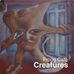

| Artist: | Frogg Cafe |
| Title: | Creatures |
| Label: | self produced |
| Length(s): | 53 minutes |
| Year(s) of release: | 2003 |
| Month of review: | [10/2003] |
| 1) | All This Time | 8.02 |
| 2) | Creatures | 7.41 |
| 3) | The Celestial Metal Can (In Memory Of Charles Ives) | 8.19 |
| 4) | Gagutz | 7.55 |
| 5) | Waterfall Carnival | 21.15 |
Creatures opens with a bit of mellotron, but is a more jazzy affair. Plenty of marimba too, and together they do build a bit of a Zappa feel. The vocals are more sensitive, we get more vocal harmonies, some very Gentle Giantesque. The solo vocals are sometimes gorgeous (listen to the part right after the Gentle Giant harmonies). The drumming is light and subtle, but intricate. Plenty of gentle jazzy interludes on this one, quite a difference from the heavy opener. It all ends in synths
The Celestial Metal Can (In Memory Of Charles Ives) is the next one up. After a bit of silence we open with effects. I am not familiar woith mr. Ives but in view of this opening he might be a composer of musique concrete. Percussion, voices, some accidental guitar playing, make it an experimental piece of work, totally different from the previous two songs.
Gagutz opens with clarinet and is somewhat in Cuneiform vein. What I mean with that is that although rock, the avant-garde feel is quite strong and you ought to be thinking along the lines of Kerman and his 5UU's and similarly oriented bands. The violin also calls David Cross to mind when he played with King Crimson. The music is quite tense at times. Ponty is also an easy reference here, hence a strong meandering jazzrock feel is present, while later the trumptet takes control and After Crying may come to mind.
Waterfall Carnival is the main epic clocking at more than 20 minutes. After the previous two non-vocal tracks, it is good to have the vocals back. Opening with acoustics, this is a friendly sounding first few minutes. Again, the vocal melodies are strong, especially the chorus. There is a strong Kansas feel here althought the bombasm is still low. But there is something of that undefinable air in here, maybe some sort of American folk music feel. The bleepy interlude on keys is more Genesis like, a bit quirky, but warm. The violin comes in later again hightening the Kansas likeness again, while some of the melodies are typical for Gentle Giant. Halfway the music dies down for some didgeridoo type sounds. Hammond and violin work together to good effect later on, before we invite the acoustic guitars back in for the vocal passage. There is something of The Wall by Kansas in here, although I think I would have preferred the drums to be a bit more forceful. On the whole, the song does not entire live up to its length.